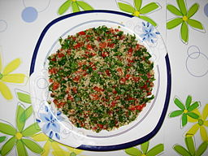

Tabouleh

Photo By
Miansari66
- Own work,
CC0,
Link
- Prep time: 15 min
- Cook time: 30 min
- Servings: 12
Ingredients
- 2 cups Cracked Wheat (bulghur)
- 2 cups Very Hot Water (or as directed)
- 1 Cucumber, chopped
- 2 small Tomatoes, chopped
- 1 bunch Green Onions, sliced
- 1/2 cup Mint (fresh), chopped
- 2 cup Parsley (fresh), chopped
- 1 clove Garlic, minced
- 1/2 cup Lemon Juice (fresh)
- 3/4 cup Olive Oil
- 1 Tbsp Pepper
- 2 tsp Salt
Directions
-
Soak the cracked wheat in the hot water until the water is absorbed,
about 30 minutes.
- Drain any excess water, if necessary, and squeeze dry.
-
Combine the salad ingredients (all but the oil, lemon juice, salt and
pepper dressing ingredients) in a medium bowl.
- Mix the dressing ingredients together and stir into the salad mix
- Serve chilled or at room temperature.
Home